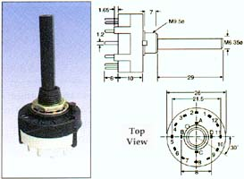

This list is just to point out where some of these parts can be obtained in Australia. Most parts should be easily found around the world.
I have also started a group on Yahoo for discussion of locating parts, modifications and corrections etc. Visit the CGS Synth discussion group.
LM358
Some people are finding LM358 are causing problems when used as input comparators. If the LM358 is wired to both power rails, simply replace it with a TL072. If it is wired between +VE and 0V, Try a TL072, but if that fails consider using MC34072.
Further investigation suggests that the LM358 works fine with ripple counters such as the 4024, but fails with synchronous counters.
Q. Why does my 4015 get stinking hot? (4015 is just a randomly chosen 4000 series number - this applies to all 4000 series chips such as 4017, 4024, 4066 etc.)
A. It is probably a 74HCT4015, or some other 74xxx variant designed to run on 5 volts. It is possible that these chips may not have the "74" in their part number, so avoid any that start with "HC". You want CD4015, HEF4015 or MC14015. Note that Motorola includes "1" at the beginning of their part numbers. A MC4015 is a different device altogether and will also get stinking hot. If the salesman behind the counter tells you the 74xxx will work just as well, IGNORE HIM - he's a salesman, not a technician or engineer. There will be letters after the device number. "B" is the most common. these extra letters indicate whether the chip is buffered, and what package type it is. Make sure you get a DIP package and not an SMD package.
0.156 (3.96mm) 4 pin connectors as used for the power supply connections to the PCBS (MOTM/Blacet Connector: Male 4 pin .156 Amp MTA). The straight entry ones are stocked by the following companies. The 90° ones I have no idea.
Altronics. Sold as P 5604 and P 5644.
Jaycar. Sold as HM-3444 and HM-3434.
Unchecked sources:
Allied #512-3452
Mouser #571-6404454
TOP-3 heatsinks
Altronics. 50 mm sold as H 0665.
Jaycar. 40 mm sold as HH-8522.
Sometimes these can also be salvaged from old computer monitors, or switch-mode power supplies. Be aware that both monitors and switch-mode power supplies may retain dangerous voltages even when not powered.
Ferrite beads as used on the power supply feeds to the PCBS.
Altronics. Sold as L 5250.
Jaycar. Sold as LF 1250.
These beads can also be salvaged from old computer circuit boards, hard drives etc. Failing all else, they can be be replaced with a wire link.
20k, 22k and 25k trimmers/pots are interchangeable with each other.
47k and 50k trimmers/pots are interchangeable with each other.
12 position rotary switches. Made by Alpha.

Altronics. Sold as S 3021.
Jaycar. Sold as SR-1210.
Lorlin switches also work. Mouser Stock Nos. 10WA144 (D shaft) or 105-2454 (Round shaft).
SPDT Center-off switches for the Gate sequencer.
These are the common C&K outline miniature toggles, though many copies will be compatible.
Altronics has a suitable switch. Sold as S 1332.
Wavetable ROMs. No longer available.
It is a good idea to test each transistor before you use it. Cheap multimeters often have a suitable tester in them. The purpose of this test is to determine the pin-out of the transistor, because increasingly frequently "rogue" transistors are being sold - transistors with their pin-out reversed with respect to others bearing the same part number.
Dual transistors. Substitutes can be made for the LM394. Other dual transistors that should work are 2SC3381, 2SC1583, MAT02, SSM2210. Some will be of a physically different configuration.
2N3906 (and presumably 2N3904) transistors. Please note that the "2N3906C" variant has a different pin-out to the "2N3906" variant. I am not sure if this is across the board or just from one manufacturer.
BC547 transistors. These are just a cheap common NPN transistor. Just use what you can buy locally. 2N3904 should be fine, though the leads are in the reverse order, so you will need to install them "backwards" with respect to the transistor outlines on the overlay. The same applies to BC557 - just use the 2N3906. Later PCBs have transistor symbols within these outlines to assist with substituting transistors.
Note that the BC547 and BC557 are available in other pin-outs too, depending on the TO-92 spec. the manufacturer has used. According to my my data-books, the pinout I use is TO-92h.
A Phillips C547 is a BC547. Same applies to C548, C549 C557, C558 and C559. This is one odd occasion where the "C" is not referring to a 2SCxxxx Japanese transistor.
74LS series chips. I frequently use 74LS series chips because I have them lying around, though I would expect 74HC or 74ACT series chips would work as well, or in some cases better than the 74LS chips. I have used chips from the 74ACT series in some of the designs without problems. In fact the 74ACT are likely to have less problems than the 74LS series when used with faster PC mother-boards.
Resistors. Metal film 1% resistors are best. Wattage from .25W to .7W are suitable. It is acceptable to use common 5% carbon resistors in the trigger and gate inputs as these locations are not critical, and in the CV processing circuits of PWM and other non-frequency related functions.
Capacitors. I'm afraid I'm very untechnical in my choice of capacitors. Sure, sometimes you need a really high quality one for a specific application, but generally almost anything will do, as any degradation in performance is usually unnoticeable to the ear. Mostly I use what I have to hand, and that is MKT, greencap or some other brand's variant of mylar (red, yellow, whatever). If I have nothing else to hand I will use ceramic. I prefer MKT or Wima for larger values (100n and above) simply because they are physically smaller. My PCBs reflect this. For decoupling capacitors, little monoblocks (monolithic ceramic) are fine. That is what they are meant for after all.
A quick guide to quality of ceramics, courtesy of Harry and other SDIY members:-
The good stuff is at the top of the list. The stuff at the bottom are really only any good for decoupling power rails. "Low-k" versus "High-k" are referring to "K" (dielectric constant). Really, capacitors should be chosen for accuracy and stability, rather than just a very general reference to their dielectric constant.
Small cap values in any size package are usually "low-k" as in C0G or NP0 dielectrics
X7R is not too bad but its not good for critical or stable timing
Z5U is getting pretty bad... it's "high-k" and good for decoupling
Larger cap values in small packages are getting toward "high-k". 100n monoblocks are a prime example of this (about 3mm by 4mm or even smaller).
Capacitor values:
1 x uF (or u or mfd, or micro Farad) = 1000 x nF (or n or nfd of nano Farad)
1 x nF = 1000 x pF (or p or pfd or pico Farad)
Capacitor voltages:
The voltage given in a parts list is the minimum voltage you need for a capacitor.
As such, a 35V capacitor can be used in place of a 25V capacitor and so on. When no voltage is specified, assume the capacitor will be 50V or above - which is as low a voltage as that capacitor type is likely to be manufactured in. For SMT decoupling caps, 35V or above is adequate, and in most cases (between power rail and 0V), anything over 20V would be fine.
Soldering SMT/SMD
This video shows me soldering a 1206 SMD 100n capacitors on CGS boards using a regular soldering iron. Instead of using the tip of the iron to position the component, a small screwdriver could be used. Likewise, instead of using your fingernail, a screwdriver could be used to hold the component down.
Jacks. I never specify jacks as these will vary with a user's requirements. Sometimes a design will include a normalized connection, which obviously cannot be achieved easily with a banana connector.